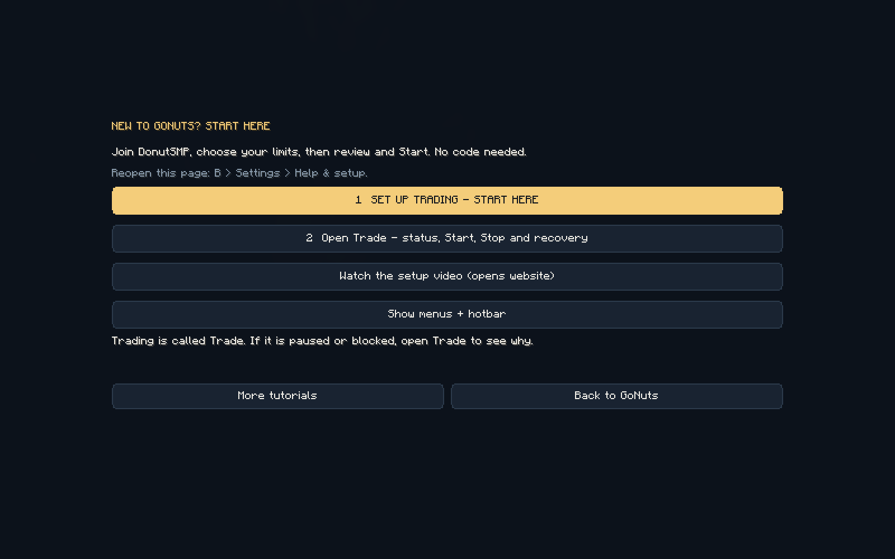
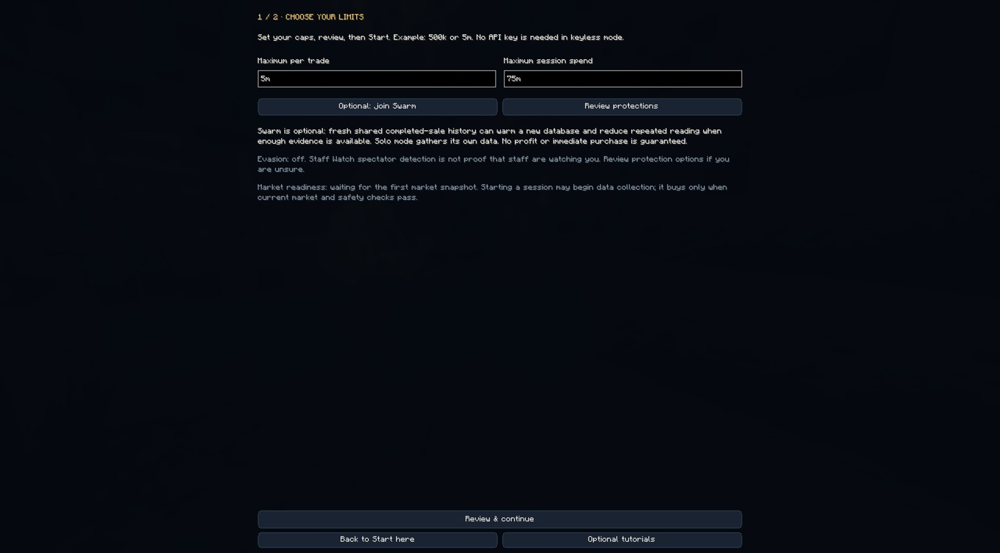
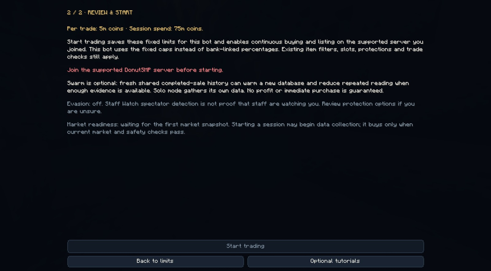

LESS SETUP. MORE CLARITY.
Your GoNuts handbook.
Setup, trading controls and answers to common questions. Choose what you want to do, then follow the matching guide.
Trade only selected items →First install · Find AutoPilot / Trade · Set up a hive · Trading handbook
SWARM API
Join the shared market network
Link a bot to the Discord-authenticated dashboard to contribute public market observations and receive shared discovery hints. Learn the benefits, setup steps, contribution details and what the anonymous activity count means.
Swarm setup and benefits →01 / GET STARTED
First install
Missing the gold START HERE button? It was added in PR219. Use the latest Minecraft 26.2 download above and the installation steps below; older builds have different navigation. Keep your existing configuration.
- Prepare Fabric. For the official Minecraft Launcher, follow Fabric’s installer and OS-specific instructions. Other launchers have their own Fabric setup. Get the matching Fabric API mod too.
- Download GoNuts. Use the website’s Minecraft 26.2 download. Keep the
.jarintact; do not extract it. - Close Minecraft and open the right game folder. Use the directory for the installation you actually launch. Put GoNuts and Fabric API in its
modsfolder; create that folder if missing. Keep only one GoNuts JAR. A custom instance may not use the default.minecraftfolder. - Launch the Fabric 26.2 profile and join DonutSMP. Enable the sidebar scoreboard in
/settingsso GoNuts can read your balance. Press B (default binding). - Choose your limits. A new install opens START HERE. Select its large gold Set up trading button to reach this step. Set maximum per trade and maximum session spend, then select Review & continue. If you see any other tab, choose the gold START HERE button at the beginning of the navigation, then Set up trading. Screenshot amounts are examples, not recommended limits.
- Review protections. Review Evasion and Staff Watch if you use them, then return to setup. Swarm linking and Discord are optional. Normal keyless setup needs no manual API key.
- Review & Start. Check the amounts and readiness. Read any blocker. Start trading saves these fixed caps and starts through the existing checks. Opening a guide does not start or resume anything. Fresh data may need time to gather. No purchase or profit is guaranteed.
- Find your controls. Trade is the current AutoPilot tab. B opens GoNuts; End is the default emergency stop. Check Minecraft Controls if you changed bindings. Tutorials → Find AutoPilot / Trade reopens the explanation.
3 min 14 sec · silent, with captions directly on the video · follows START HERE → Set up trading, limits, review, Trade and Show menus + hotbar. Real offline GUI captures; the server-join blocker is visible. Read your own client’s readiness message. No live bots were used.



CURRENT CLIENT
Where did AutoPilot go?
It is now called Trade. Press B and choose the gold START HERE button, then Open Trade, or choose Trade in the navigation, or Manage trading on the Dashboard. Older videos may say AutoPilot or Automation.
- Want the guided setup? Choose START HERE → Set up trading. Set your maximum per trade and session spend in Choose limits, then continue to Review & Start.
- Already configured? Open Trade and review the Continuous page. If live trading is off, review both limits, choose Enable live trading and confirm. Review readiness before pressing Start.
- Read any blocker. A recovery or exposure hold needs reconciliation. Do not clear positions or repeatedly restart to bypass it. Opening a guide does not start or resume a bot.
Can’t see the game menus or hotbar? START HERE → Show menus + hotbar switches off only those two hiding options for this account. It keeps name privacy, trading limits and other settings. This is not a full reset.
Looking for API, Discord or web-panel setup?
Trade’s page selector cycles through Tools: API key / test, Discord command centre, Web panel and Back to Continuous. Swarm linking is on Swarm. These optional connections are separate from local trading setup.
In game, Tutorials → Find AutoPilot / Trade explains these paths. For item selection and prices, continue to the trading handbook.
02 / MULTI-ACCOUNT SETUP
Many accounts. One hive.
A hive shares market information and a trading database between separate Minecraft instances on one computer. Newly combined members retain separate settings, presets, limits and recovery state. Each account still signs in separately. Headless mode is optional.
Set up a Hive from either panel, including headless clients
Use Hive & commands in the local panel or in the panel opened with Open panel on your website dashboard. Updated running bots on this computer appear automatically. A client must load this update once to advertise itself; discovery does not connect accounts, start trading or scan other computers.
- Choose the new bot and your existing Hive. Existing members are grouped together. No game window or copied Hive code is required.
- Choose Add selected bot to Hive. The existing member registers its local Hive metadata at a safe checkpoint. It keeps running on the same database. The new bot rechecks that it has no trading history or saved account records, pauses safely if necessary, then leaves only its own world before creating its native Hive link.
- Restart only the new instance normally. Its own settings, execution gates and Swarm installation link stay intact. Existing Hive members can keep running. Adding a member never merges existing histories, clears records or enables trading.
Queue a manual command for one bot
Are my accounts together? Open Hive & commands. Same Hive confirmed means the detected running bots share this panel's ledger. Choose All accounts on Money or Hive for combined figures. Separate instances detected means their local Hives are still separate, even if both are linked to Swarm. Only one running bot detected means the other updated instance is not currently visible to same-user discovery. Start it normally and wait for the roster to refresh. Do not delete a Hive to fix detection. The Hive page remains visible on current builds, including single-account setups.
In either panel, choose Hive & commands → Send as, select a bot in your Hive, enter the command, then choose Review command → Confirm and queue once. Commands wait for a safe native checkpoint and the normal FIFO pacing behind current work. Recovery, cursor, persistence, connection and teleport guards remain in control. A stopped trader is not started by queuing a command.
Supported utility commands are /rtp, /home, /spawn, /pay player amount, /bal, /balance, /msg, /reply, /r and /help. Native guards may refuse a command. Trading and inventory actions retain their existing controls; this box does not bypass them. For a confirmed region transfer, use the Region Map’s existing switch controls.
The selected bot shows QUEUED, WAITING, SENT, CANCELLED, EXPIRED, REFUSED or an uncertain handoff. SENT means handed to the game connection, not confirmed paid or teleported. Payments are never retried automatically. Pending work expires after two minutes, can be cancelled before sending, and is not replayed after a client restart or on a replacement connection. If submission is uncertain, check that bot’s queue and the server result before issuing another payment.
Alternative: setup from the game window
Earlier captioned walkthrough of the two-history combination flow. For adding new members, follow the current steps below; choose Join existing hive and restart only the new instance.
With both instances on the current build, GoNuts can detect another running account on this computer. When you open the panel, choose Review setup, Not now or Don’t ask again. Detection is local and does not link accounts or interrupt trading. Accounts already in the same hive and duplicate windows using the same account do not trigger it. Existing histories are not merged by this prompt.
- Share your existing hive. On an existing account, disconnect and open Multiplayer → GoNuts hive → Share this hive. Copy its code. Older shared-folder setups need this registration once before appearing in the discovery list. Keep the original folder.
- Open each new account separately. Use a fresh Minecraft instance with the current GoNuts build. Disconnect from any world or server, open Multiplayer → GoNuts hive → Link accounts, select the existing hive or paste its code, then choose Review connection.
- Choose Join existing hive (new account). This checks that the new instance has no trading history or saved order/balance records, then keeps its own settings in a separate profile. Existing members and their histories stay in place. Its Swarm installation link stays with its Minecraft instance.
- Restart only the new instance. Existing hive members can keep running. Repeat for each additional account; a hive is not limited to two accounts. Joining does not enable trading or bypass recovery checks.
- Already have separate trading histories? Use Queue safe combination only for the supported two-single-account history merge. That separate operation requires closing both instances and starting the requesting instance first. It is not the flow for adding a fresh third or later member. Keep all original folders.
What is shared?
| Shared | Stays per instance/account |
|---|---|
| Trading database, market information and hive web-panel setup | Minecraft login, Swarm installation link, new member settings and limits, proxy profiles, local options and each account’s own order/balance records |
I created a separate hive on both accounts, or both have trading history
Use the review/combination flow above. It supports two single-account hives, preserves each member’s settings and originals, and remaps position references while keeping ownership and session caps. Conflicting receipts, payroll or loan records, existing multi-member groups, unsupported schemas, and running instances block the import instead of guessing. A queued import can be cancelled from Hive setup until switching begins. After an interrupted switch, close both instances and start the requesting instance first to finish safely.
I’m moving from Modrinth to Prism
If the original instance still works, create the hive there first and join it from a fresh Prism instance. The shared data remains in the original folder, so keep that folder even after switching launchers. This connects GoNuts data; it does not transfer your Minecraft login or launcher settings. Moving or deleting the original folder will break the link.
Can I run this across two computers?
This wizard links a local folder on the same computer. Do not put an active SQLite database in a cloud-sync folder or use it as a shared network database. A multi-computer service is a different setup.
Is the hive code a password?
No. It identifies a local folder and hive. It can contain a Windows user-folder path and the creating account’s name, so paste it only into your own second instance. It is not a public invite link or a way to grant remote access.
03 / BROWSER CONTROLS
Web panel
- Open GoNuts → Trade → WEB and set a PIN.
- Open the address shown there. The default on the same computer is
http://localhost:8765. - For a phone on your home Wi-Fi, enable home-network access and use the LAN address shown by the mod.
localhoston your phone means the phone itself.
In a hive, one shared panel handles both accounts. Separate, unlinked instances on one PC need different ports, such as 8765 and 8766. Keep the PIN private and avoid exposing the panel directly to the internet.
EVASION AND HOMES
Choose where the bot teleports
- Open the Evasion tab in GoNuts or the local web panel.
- Choose /rtp for random teleports or /home to cycle named homes.
- Enter home names such as
base, vault, farmand save. Set these homes on the server first; GoNuts does not create them.
With /home selected, teleports cycle through the names in entered order. With /home selected, an empty list does not silently fall back to /rtp; add a valid home or explicitly choose /rtp. Hive clients sharing this list need the same home names. Guard, distance, damage and resume controls are on this tab; Staff Watch region transfers remain separate.
Choose automatic or manual slot capacity: automatic detection stays on by default and uses confirmed rank/menu observations for this account. Editing Auction slots or Order slots in the GUI turns detection off for this account and preserves your chosen numbers, including across relaunches. For an 18-slot account, set both capacities to 18 if both should be limited to 18. To resume detection after a rank upgrade, open Settings → Tiers and enable Detect account slots automatically. The same setting is available in the local and hosted panels. Each Hive account keeps its own choice. A manual limit does not unlock server slots.
The guard switch, Settings and web panel now use one per-client on/off value. The web panel also shows the Evasion activity summary and latest hive events alongside the settings; refreshing the history keeps your unsaved settings edits.
YOUR MARKETS
Only trade specific items
Want automatic prices for selected items? Open Items, select the items and click Include. Review the Included list and remove old entries you no longer want. Track alone does not restrict trading; an empty Included list allows normal item selection.
Want your own buy and sell prices? Add entries on Flips, save and turn Flips only ON. General scans stay off, including when the list is empty. Existing stock maintenance still runs. With Flips only OFF, manual entries run alongside automatic markets.
Step-by-step Flips setup →Included versus Tracked · Price and quantity examples · Why one item at a time?
KNOW YOUR SERVER
Region Map
Open Region Map in the GoNuts GUI, web panel or Discord page selector. It uses the numbered 9×9 layout to show the area mapped from this client's current Overworld position, even when the connection address is simply donutsmp.net. The white area marks the whole server area; it is not an exact player marker.
The existing Hide name and coordinates privacy toggle scrambles GUI XYZ with dummy characters. Web and Discord images always hide exact XYZ and never receive those coordinates. Disconnected clients, other networks, other dimensions and positions outside the built-in map show an unavailable region. This view describes the client hosting the panel, not every hive member.
Donut’s own Randomized Coords setting must be OFF. The client cannot determine the real region from randomized XYZ, and an in-bounds randomized position can produce an incorrect label. This server setting is separate from GoNuts screenshot privacy: turning on GoNuts privacy hides the displayed numbers without changing the map calculation. Opening the map does not move the player. To move manually, choose a destination and press Switch this client in the GUI. In the web panel or Discord, select one account, choose a destination, then press Switch selected account. Destinations are Asia, East, West, EU Central, EU West and Oceania. The map always describes the panel host; the account selector targets the switch, not the map. Requests wait up to 30 seconds for a safe checkpoint, then up to 30 seconds for fresh server confirmation. A stopped or manually paused session stays stopped or paused; only trading paused by this transfer can resume. A timeout requires checking the client manually. The existing teleport safety setting remains enforced. The region layout is built into the client and may need updating if the server changes it.
SERVER RESTARTS
Restart queue bypass
Open Settings → Session → Restart queue bypass. It is enabled by default; an explicitly saved off setting stays off. When DonutSMP puts the client in its restart waiting room, GoNuts waits for a safe trading checkpoint, disconnects, and joins through another regional address.
The default choices are east.donutsmp.net, west.donutsmp.net, asia.donutsmp.net, oceania.donutsmp.net, eu-central.donutsmp.net and eu-west.donutsmp.net. It skips the current connection address and tries the next if a region fails or also returns the client to the waiting room. Addresses to come back in through accepts a custom order of up to six addresses on the same network.
It stays on the working region and verifies a stable world and fresh balance sidebar before attempting to resume. Positions, orders and limits are retained. A manual Stop or unresolved-trade hold still prevents automatic trading. Leaving the waiting room can lose your previous world position, as the server warns.
STAFF WATCH
Choose the response
In the GUI Staff Watch tab, enable Switch regions first to use an available /rtp destination on the first alert. The web and Discord Staff Watch pages offer the same response choice. The Module and Escape / reconnect controls must also be enabled; choosing a response does not enable them.
After the transfer is confirmed, a two-minute follow check starts for that staff member. A fresh local alert for the same identity during that window disconnects immediately and uses the existing 5–10 minute reconnect cooldown. Duplicate alerts during a transfer do not count, and seeing another staff member does not erase an earlier follow check. A repeat beyond two minutes is a new first alert. This is a precautionary response, not proof that staff are following you.
With Switch regions first off, staff alerts disconnect immediately. Region discovery, safe transfer checks and reconnect safeguards remain in force. Entry hostnames are not used as proof of the current in-game region.
04 / STAY CURRENT
Updates
Enable Auto-update in GoNuts Settings. It checks for the newest already-published build; it does not require a fresh release after you turn it on.
| Notice | What it means |
|---|---|
| Update available | A newer published build was found. This does not mean the download has finished. |
| Downloaded / installs when the game closes | The download passed verification. Close Minecraft normally, then launch it again. |
If an older updater never downloads, close Minecraft and manually replace the old mod JAR with the current release once. Do this in each launcher instance. Updating the mod does not require deleting the config or database.
05 / GET HELP
Bug reports
- Open GoNuts → About → Report bug.
- Describe what happened, what you were doing and what you expected. The first line should be a short summary.
- Sanitized diagnostic logs are included automatically. Optional preview lets you inspect what will be sent. If the log is unreadable, the report includes an availability notice.
- Click Send report. Wait for the submitted issue link; a prepared report is not a sent report.
No GoNuts service token or GitHub account is required for the in-game direct submission. Reports create public GitHub issues. The attachment is a limited, sanitized diagnostic excerpt, not your full Minecraft log. Avoid adding private information to your description.
Critical automatic reporting is a separate, per-instance opt-in. It covers supported critical failures, not every pause or a slow-selling market. Feature requests are separate and are considered without a promise of implementation.
Configuration context is included: every new report carries a sanitized Settings code containing approved numeric settings and toggles, including this account's slot limits. The preview shows the code. Home names, player lists, webhook URLs, Discord identifiers, tokens and all other text settings are excluded. Settings are diagnostic evidence; support does not automatically apply them.
Step-by-step MultiMC + HeadlessMC guide →
06 / OPTIONAL
Headless mode
You do not need headless mode to run a hive. Set up and verify the hive and web panel with the normal game window first.
Our Windows Prism setup uses the HeadlessMC LWJGL agent. Get the matching agent from the official HeadlessMC releases; the example below uses headlessmc-lwjgl-3.0.0-RC6-no-asm.jar. Keep it in a path without spaces.
- Before hiding the game window, enable Join the server by itself in each instance and verify web-panel access.
- In Prism: Edit instance → Settings → Java, enable the Java-arguments override and add the arguments below, using your actual agent path. Preserve any other required arguments.
- Disable Sodium, Iris, ImmediatelyFast and Entity Culling in that instance. Launch it and verify recent automation activity in the panel.
-javaagent:C:/hmc/headlessmc-lwjgl-3.0.0-RC6-no-asm.jar -Djoml.nounsafe=true -Dfabric.systemLibraries=C:/hmc/headlessmc-lwjgl-3.0.0-RC6-no-asm.jarTo close normally, create send-command.txt containing !quit in that instance’s Minecraft folder. Avoid the launcher’s Kill button. To restore the game window, close normally and remove the headless-specific arguments.
07 / OPTIONAL
Discord panel
The Discord panel is separate from the browser panel. It needs a Discord bot that you control and an operator account allowed to use its controls. Never share the Discord bot token.
SAVED SETUPS / LOCAL ANALYSIS
Presets and Analyzer
In Settings, choose Saved presets to save your current setup under a name. Save experiments under new names and apply your baseline to switch back. Applying a preset does not overwrite the saved copy and does not require restarting.
Open Analyzer to review your local 24-hour ledger, bankroll, purchase cap, hive context and observed markets. Each finding explains the evidence, a suggested experiment and the limits of any estimate. Save a suggested preset to review it before applying. Analysis never sends trades or uploads settings to a backend.
08 / COMMON QUESTIONS
Troubleshooting
I don’t have a Hive setup tab
Install the latest GoNuts release in both instances. Check the actual running build after restarting; a downloaded JAR does not change the game that is already running.
The panel only shows one account
Both instances must have joined the same hive and restarted. Both must be running under different Minecraft accounts. Separate databases do not become one hive just because the accounts are in the same launcher.
Both accounts’ slot limits become the same
Update both instances. Auction and order slot limits now stay in each instance’s own settings instead of being written to the shared hive settings. Existing local values are preserved. If a limit was already overwritten on an older build, correct it once for that account; the update cannot reconstruct an earlier value that was lost.
“Port already in use”
For a correctly linked hive on the latest build, the other client hosts the shared panel. For separate instances, give each panel a different port. An unrelated program can also occupy a port.
Shared folder unavailable
Restore access to the original folder before launching. GoNuts refuses to replace a missing shared ledger with an empty one. If you moved the source instance or uninstalled its launcher, restore its original folder from your backup.
It is scanning but hasn’t sold anything
A fresh market scan, a purchase and a listing are different stages. Only a completed sale contributes recorded profit. Check the current Trade state and recent activity. If a failure persists, send a report with the diagnostic excerpt rather than deleting the database or repeatedly restarting.